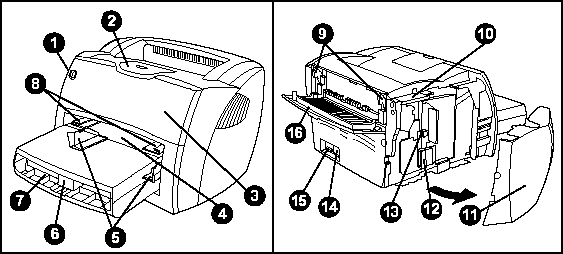
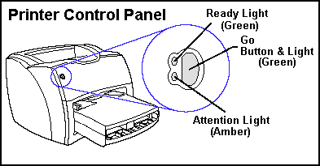
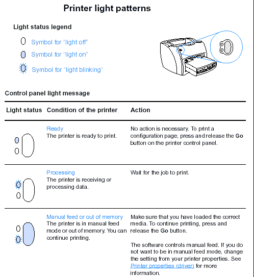
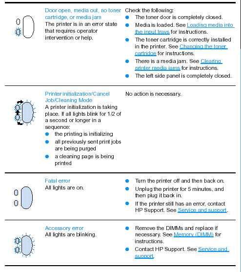
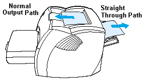
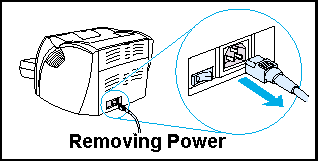

Peripherals OP: HP 1200 Printer
General
The HP 1200 Printer is a laser printer. It prints only in black ink. For troubleshooting printer problems see the troubleshooting section of this chapter. Cleaning instruction are also in this chapter under the Cleaning Subject.
Reference Drawings
Refer to these drawings for locations of the printer's components.

Component Locations
These are the locations of important parts of the 1200 Printer.
| No. | Item |
|---|---|
| 1 | Control Panel |
| 2 | Long Media Extension (Output Bin) |
| 3 | Toner Door |
| 4 | Priority Input Tray |
| 5 | Side Media Guides for Main Input Tray |
| 6 | Long Media Support for Main Input Tray |
| 7 | Main Input Tray |
| 8 | Side Media Guides for Priority Input Tray |
| 9 | Release Levers |
| 10 | Scanner Connection (optional) Note: The HP 1200's scanner function is not used by BCI. |
| 11 | Left Side Panel |
| 12 | Parallel Port |
| 13 | USB Port |
| 14 | Power Receptacle |
| 15 | Power Switch (220-240 Volt Printers) |
| 16 | Straight-through Output Door |
Control Panel
The printer control panel is comprised of two lights and one lighted button. These lights produce patterns that identify the
printer’s status.

| Indicator / Control | Light Color | Function |
|---|---|---|
| Go button and light | Green | To print a configuration page or to continue printing while in manual feed mode, press and release the Go button. |
| Ready light | Green | Indicates that the printer is ready to print. |
| Attention light | Amber |
Indicates:
|
Control Panel Light Patterns
Control Panel Light Patterns

Left Side Panel
The page being printed might be too complex for the printer's memory capacity. These options are available for remedying this situation:
- To continue printing, press and release the 'Go' button.
- Lower the resolution. See 'Understanding Print Quality Settings' for more.
- Add more memory. See 'Memory (DIMM) for more information.

To close the left side panel, attach it at the front of the printer, then swing the rear of the panel inward until it clicks into place.
There are two hinges that hold the front of the panel in place
Paper Output Paths
The two paper paths in the printer are shown in this drawing. The Straight through path is used for media that does not easily bend.

Print Quality Settings
Print quality settings affect how light or dark the print is on the page and the style that the graphics are printed. The printer settings can be changed using 'Printer Properties".
| Best Quality | This prints at 1200 dpi and provides the best print quality. |
| Faster Printing | The resolution is reduced slightly so that the job can print faster. This is the default setting. |
| Custom |
This prints the same as the Faster Printing setting, but allows changing the scale patterns. |
| EconoMode (Save Toner) | Text is printed using less toner. This setting is useful when printing drafts. Access these settings on the Finishing tab (Windows) under Print Quality settings in the printer properties. To view the details of each setting, click Details.
Note: To change the print quality settings for all future print jobs, access the properties through the Start menu in the Windows system tray. To change the print quality settings only for the current software application’s use, access the properties through the Print Setup menu in the application being used to print. See Printer properties (driver) for more information.
|
Operators Manual
Various online manuals for the HP 1200 are available at this web site:
http://h20565.www2.hp.com/portal/site/hpsc/public/psi/manualsResults/?sp4ts.oid=29789Power Switch
These are the operating voltages for the HP 1200 and the location of the power switch..

| Operating Voltage (VAC) | To Power On or Off |
|---|---|
| 110 - 127 | Plug / Unplug Printer (no power switch) |
| 220 - 240 | Power Switch on rear of printer next to power cord. |
Leave Printer On or Off?
It is HP's position that there is no relationship between the number of hours an HP LaserJet printer remains powered on and the printer's warranty coverage. Leaving the printer on for 24-hour periods to facilitate automated print operations will in no way invalidate or otherwise directly affect the printer's warranty. It is up to the individual user to determine whether the printer will be left powered on or not.
| Reasons to leave the printer powered on | Reasons to power off the printer |
|---|---|
| Maintenance of a constant operating temperature so the printer does not have the stress of heating and cooling from turning on and off the machine. | Less wear on the moving parts of the printer. |
| Newer models in the HP LaserJet family have a PowerSave feature, which allows them to conserve electricity by substantially reducing power consumption when idle for a specified length of time. |
Less power consumption; this is less important in the case of the printers listed in item 2 above. Possible extension of the life of the heating elements by avoiding constant heat. |
| Some models in the HP LaserJet family have a Sleep mode. After 15 minutes of inactivity, the printer will automatically shift to a powered-down state. On some HP LaserJet models, the user may select the period of time before powering down. |
Economode
Using the EconoMode (Save Toner) setting instructs a printer to place half the normal amount of toner on a given page. For example, printing a black square using EconoMode would result in a gray square being printed. Using EconoMode regularly may result in extended life of a toner cartridge.
Toner cartridge date stamp
Some HP LaserJet toner cartridge packages are stamped with an alphanumeric date code. This code represents a 30-month period beyond the date of production in order to facilitate efficient inventory management processes between HP and its resellers. It does not serve as an indication of toner life or relate in any way to warranty terms and conditions.
Loading Paper
Load the media with the top forward and the side to be printed facing up. To prevent jams and skewing, always adjust the side and rear media guides.
Voltage Conversion
Because of the different specifications, Hewlett-Packard does not offer a voltage conversion or support the voltage conversion of
the U.S. version of the HP LaserJet family of printers for foreign use. If the equipment is to be used outside of the United
States, Hewlett-Packard advises the purchase the products in the country/region where they will be used.